SUNDER is a competitive 1v1 TPS shooter where two players face each other in a hostile desert arena on a distant exoplanet.
The game encourage players to constantly adapt their positioning, movement, and aim during intense duels.
Exploration plays a key role, as the arena hides limited resources that can provide a temporary advantage and push players to take risks.
Each match is designed as a tense hunt, where reading the opponent and controlling the environment are just as important as raw mechanical skill.
The game was developed as a student project with the ambition to explore competitive multiplayer gameplay in a controlled 1v1 environment.
From the start, the project aimed to rely on a dedicated server architecture in order to better understand the constraints and challenges of online competitive games.
This technical choice strongly influenced both production and design decisions, shaping the way the team approached development, testing, and iteration throughout the project.
Dedicated Server
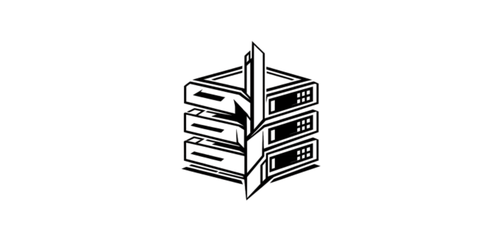
Setting up a dedicated server , including client/server builds and deployment workflows.
Multiplayer Architecture
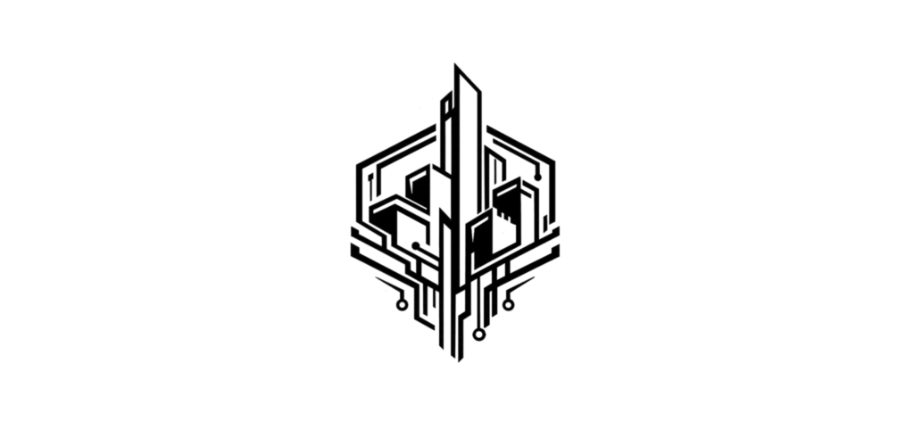
Designing and supporting the project"s code architecture, while contributing across gameplay systems with a strong focus on debugging, synchronization, and overall stability.
Version Control & Pipeline
Setting up and maintaining version control workflows (GitHub LFS, Source build constraints) to support team collaboration and production stability.
Tech Art & Support
Supporting environment and technical art tasks, including landscape work, material research, RVT setup, and experimental solutions such as Nanite displacement and POM-based footprints.
I worked on SUNDER as both Project Lead and Lead Programmer within a team of 10 students.
I was responsible for coordinating the project's direction while also taking ownership of its technical foundation.
This included planning, decision-making, and ensuring that the team could effectively work on a multiplayer Unreal Engine project.
At the beginning of the project, my involvement was very broad.
I initiated SUNDER from an early prototype and helped define its core vision.
During this phase, I actively prepared and participated in most major meetings, including game design, technical design, and artistic direction, contributing to both creative and technical decisions.
As production progressed and deadlines became tighter, my role naturally evolved.
Progressively shifted my focus toward programming and technical problem-solving, prioritizing stability, infrastructure, and production efficiency to support the rest of the team.
This section follows a devlog-style approach, focusing on the development process rather than only final results.
It reflects a school project and highlights my reasoning, challenges, and lessons learned throughout production.
So, You want to make a Multiplayer Game ?
At the beginning of the project, we quickly experimented with Unreal Engine's built-in Steam hosting system to validate basic multiplayer functionality.
This allowed us to get a first playable multiplayer prototype up and running, and to confirm that our core gameplay could work in a networked context.
After this initial test, we took time to research multiplayer fundamentals and production constraints, including latency, synchronization issues, and the differences between online and local/LAN multiplayer games.
Since competitive multiplayer games rarely rely on hosted solutions, we decided to push the project further and experiment with a dedicated server setup.
This choice was mainly driven by a desire to challenge ourselves and explore more advanced multiplayer workflows, an approach that was also encouraged by our instructors.
But, how do you build a dedicated server in Unreal Engine ?
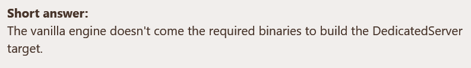
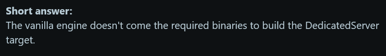
So... how do you actually do it then ?
To be able to build a Dedicated Server target, the only real solution is to build Unreal Engine from source.
Not the binary version available through the Epic Games Launcher, but the source version hosted on GitHub.
This source build includes the missing server-side binaries and build targets that are simply not shipped with the vanilla editor.
At this point, things get a bit less plug-and-play.
Building the editor from source meant digging through official documentation, forum threads, and community tutorials, often incomplete or outdated, just to piece together the correct setup. Visual Studio had to be configured properly, with the right workloads, SDKs, and dependencies (C++ toolchain, Windows SDK, .NET, etc.), and even small misconfigurations could result in hours of wasted build time.
After several failed attempts, long debugging sessions, and a lot of waiting,
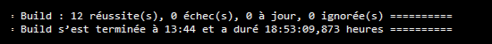
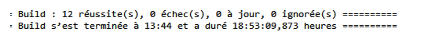
Build succeeded — 0 errors — 19hours.
From there, I finally had the possibility to make server and client builds and also testing directly in editor...
I could launch multiple Play-In-Editor instances by configuring the number of players and network mode directly from the editor, allowing one server instance and several client windows to run simultaneously on a single machine.
At this point, I didn't "build a server from scratch", instead I set up and largely understood Unreal Engine's networking environment, how it behaves, and how to work with it properly.
With a functional dedicated server workflow in place, the next challenge was understanding how multiplayer systems actually behave at runtime. This section focuses on the core networking concepts that progressively shaped the project's multiplayer architecture.
Okay, but now… how do we code multiplayer ?
First step, learn the basics.
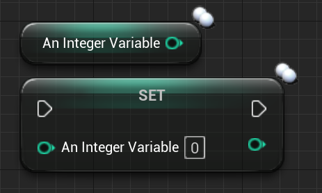
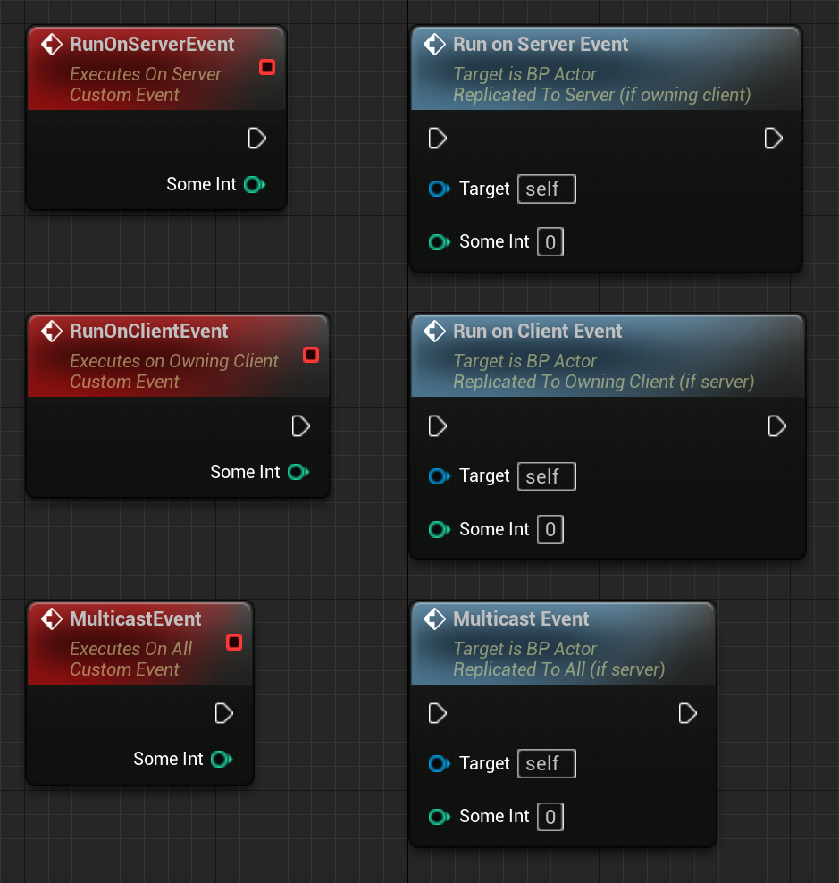
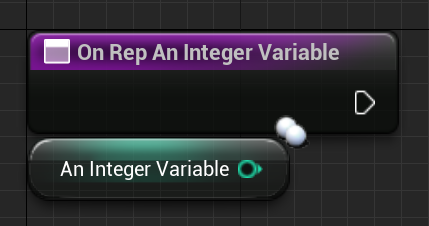
After digging into the concept of instances, replication, and how they are applied in Unreal, through replicated variables, RepNotify and client / server communication with RPC's, we were able to start coding !
We throught ...
But we still had a problem...
As you may have noticed in the previous video, character movement was still jittery in certain situations, especially during locomotion.
Yep, we had lag.
I started investigating every possible cause.
Camera smoothing, Animation state machines, Floor collisions, Input handling, and more…
What caught my attention was that these small lags and rollbacks only occurred during character movement.
Even Character rotation, was perfectly smooth.
This was a strong indication that the issue was not related to animations, the full transform or anything, but specifically to the player's position.
At that point, I started suspecting that something was constantly adjusting the player's position by very small values, causing visible jitter over time.
That naturally led me to think about synchronization.
My first instinct was simple :
Because of the player's position is replicated, the client and the server probably didn't agree on the player's position at a given moment in time and were constantly fighting over which value was correct.
And well... that's exactly what was happening.
After digging through Unreal Engine documentation and developer forums, I finally discovered the concept of network timestamps between client and server.
In short, both sides were using different time references their internal clocks were out of sync, which resulted in frequent movement corrections and visible jitter.
The issue wasn't the camera, the animations, or the collisions. It was time.
How I fixed it.
To fix jitter and rollbacks, I needed to make the simulation timing more stable.
So my solution was :
By locking the engine's DeltaTime to a fixed rate, movement updates became more consistent frame-to-frame, which significantly reduced the visible jitter caused by frequent network corrections.
This didn't “magically sync” the client and server on its own but it stabilized the time progression used by movement simulation, making replication and reconciliation behave much more predictably.
With the scope and constraints of the project, this approach was a good balance between complexity and results, and proved sufficient for achieving stable and convincing multiplayer movement.
And, Voilà !
And then came the architecture problems...
Early Architecture & First Implementation
Our idea was simple,
At the beginning of the project we planned to organize the multiplayer code almost the same way we usually do in single-player projects, following Unreal's standard class hierarchy.
The only difference was that we tried to "separate things logically".
One place for what we considered server-side logic, and another for what we considered client-side logic.
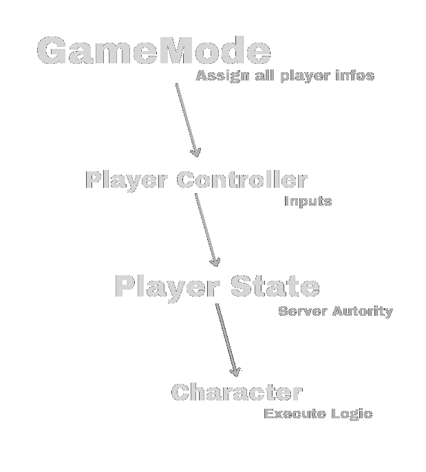
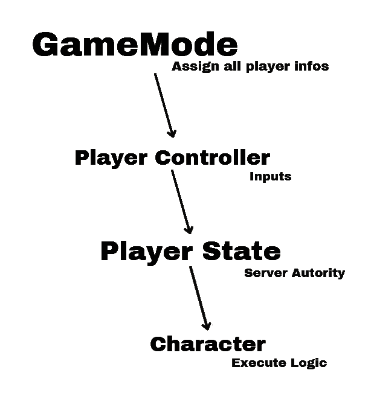
At this stage, our understanding of Unreal's multiplayer framework was still incomplete, and most gameplay logic gradually ended up centralized inside the Character class.
Production Constraints & Technical Debt
As development progressed, this architecture started to show its limits.
We ran into several issues like :
Confusion about where code should actually live ( GameMode, PlayerController, Character … ),
Client-side code executing logic that should have been server-authoritative,
Replicated variables being updated in the wrong place, leading to desynchronization,
RPCs being called from invalid contexts or at the wrong time.
Because of that, adding new gameplay features became more complex, debugging issues took more time, and responsibilities between classes were no longer clearly defined.
This is where I realized we needed to take a step back.
Discovering the Unreal Framework
I realized that we had simply skipped a crucial step: Properly understanding Unreal's multiplayer framework and the intended role of its core classes.
And so, I went back to dig into documentation and Unreal forums.
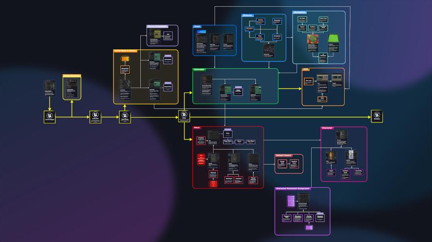
Unreal provides a clear multiplayer-oriented architecture, with well-defined responsibilities for classes such as GameMode, GameState, PlayerController, PlayerState and Character.
And we absolutely weren't doing it right...
At this point, fully rewriting the architecture from scratch was no longer a realistic option.
The project was already well advanced, the team was dependent on existing systems, and time constraints made a full refactor too risky.
Progressive Improvements & Decisions
Given the constraints, we made a pragmatic decision :
Instead of rewriting everything, we focused on improving the architecture incrementally, applying best practices whenever possible without breaking existing systems.
From that point on, new systems were implemented in the most appropriate Unreal classes whenever it was possible.
Day/Night cycle implemented in the GameState, as it affected the shared environment and needed to be replicated consistently to all players.
Tutorial UI system implemented in the PlayerController, running on the owning client only, as it was purely local and player-specific.
Match start validation handled by the GameMode, as it relied on server-authoritative logic to ensure both players were ready.
But for some systems, already deeply integrated into the Character, we intentionally left them there to avoid introducing unnecessary risk late in production.
While not ideal from a pure architectural standpoint, this decision allowed us to keep the project stable and finish development successfully.
And that's more or less where this journey ends !
Despite the difficulties faced during development, working on this multiplayer system allowed me to build a solid understanding of multiplayer logic and theory, as well as Unreal Engine's specificities and its multiplayer framework.
It also sparked a strong interest in pushing these concepts further in future projects, by exploring additional Unreal systems and more advanced multiplayer topics !
Landscape Texture Blending
Problematic
We wanted the sand landscape texture to visually blend with scene elements planted into the ground, such as rocks and buildings.
Solution
Here I used Runtime Virtual Textures to capture selected landscape material attributes (base color, roughness, specular and normal), along with height information derived from absolute world position. Then theses RVTs were exposed through a reusable material function, allowing consistent terrain blending across all relevant scene objects.
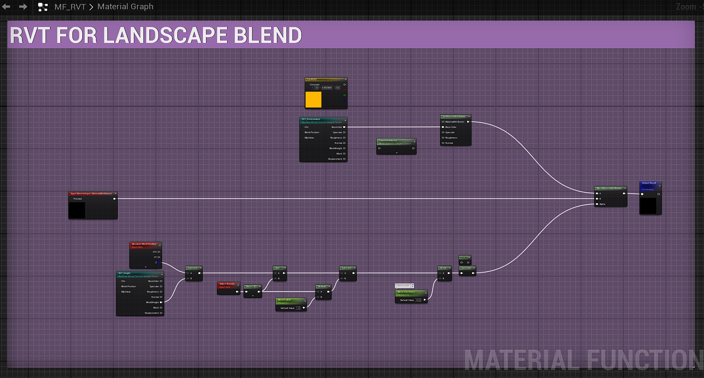
Result
Landscape Painting & Wind Effect
Problematic
We wanted to introduce a subtle wind effect in the sand to bring life to large landscape areas, without relying on heavy VFX or volumetric solutions.
Several approaches were tested, including VFX and volumetric fog, but they either proved too costly in performance or lacked the level of control and flexibility required.
Solution
The final approach relies on a simple animated texture blended directly into the landscape material. By using a panning texture layered through a Landscape Layer Blend, the wind effect can be painted directly onto the terrain using Unreal Engine's landscape painting tools.
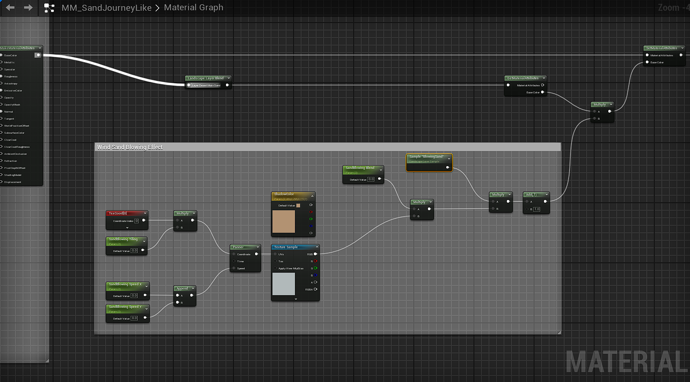
Result
Footprints
Problematic
Footprints were a key gameplay element of the project, especially for the tracking mechanics.
During the entire match, both players constantly leave footprints in the sand.
These traces needed to be :
satisfying to read for the player,
a clear movement feedback,
visible and readable by the other player (replication),
and efficient in terms of performance.
Finding a solution that balanced visual quality, gameplay readability, replication, and performance quickly became a major technical and artistic challenge.
First approach
My first approach was based on landscape displacement.
Visually, the result was very convincing and worked well as a prototype.
However, this relied on a conplex third-party plugin, and for a student project, using such solution did not feel appropriate for me.
In addition, at the time, mesh displacement, especially on landscapes combined with Nanite in Unreal Engine 5.4 was still unreliable and not mature enough for a stable production workflow. Making it difficult to iterate on or extend.
So, this prototype mainly served as a visual reference to communicate an intended quality level to the team, rather than a solution we could realistically ship even though reaching this level of fidelity was clearly an objective.
Solution
To address the limitations of the initial prototype, I redesigned the footprint system around a decal-based solution, using Parallax Occlusion Mapping (POM) to simulate depth directly in the material.
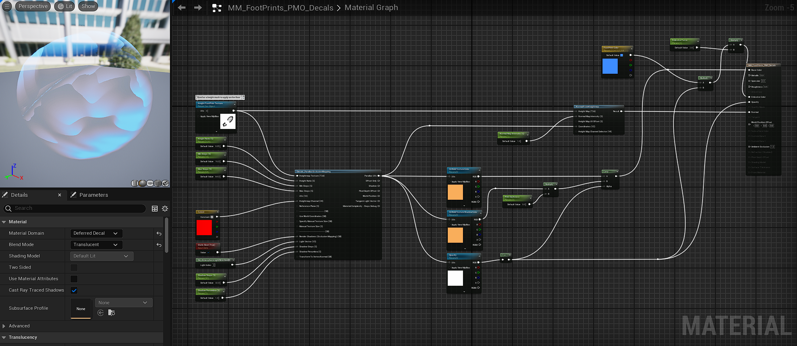
With some modification of the original POM material fonction ( thx for the help Eve ;) )
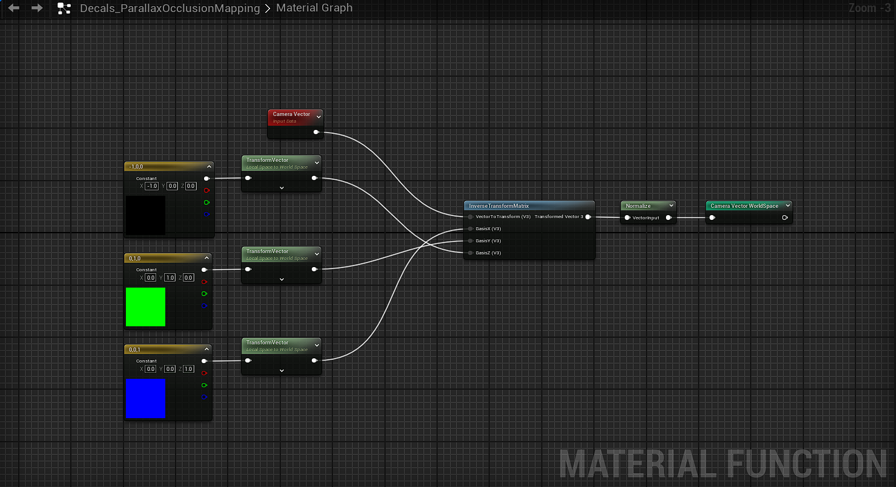
And then,
Footprints are generated through a decal projection logic triggered by animation events and managed using a pool system, ensuring accurate placement, stable performance, and scalability in a multiplayer context
Result
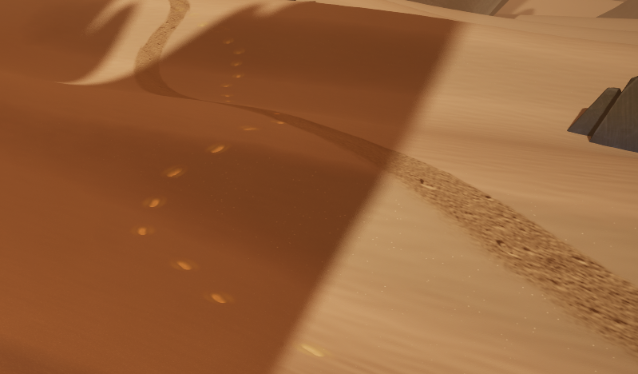
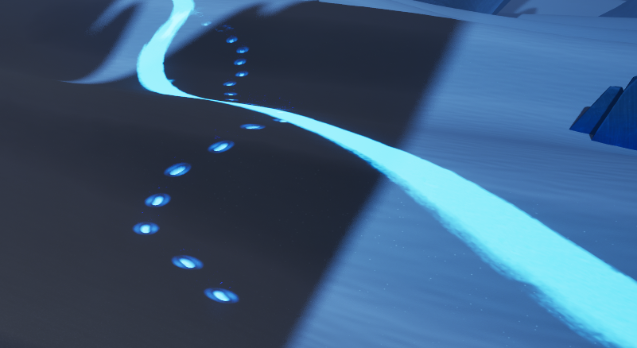
And more... but I still need to add it !
Architecture & Scalability
Designing systems early with scalability in mind proved essential, especially in a multiplayer context where technical decisions quickly impact the entire project.
Technical Trade-offs
Visual fidelity often comes with technical costs; learning to balance quality, performance, and production constraints was a key takeaway.
Gameplay-driven tech
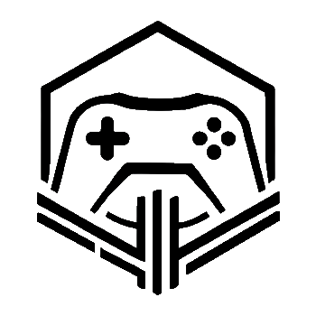
This project reinforced the importance of building technical systems around gameplay needs rather than purely visual goals.
Prototyping & Iteration
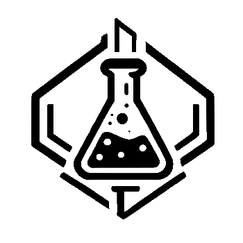
Early prototypes were invaluable to validate ideas, communicate intentions to the team, and identify technical limitations before committing to production solutions.
Team & Production
Working on a student project highlighted the importance of clear technical direction, shared constraints, and pragmatic solutions to keep the team aligned.
Tools & Workflows
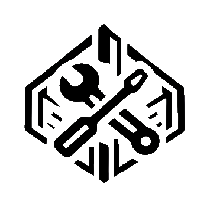
Developing custom tools and workflows helped streamline iteration and reduced friction when working with complex systems in Unreal Engine.
Some Visuals
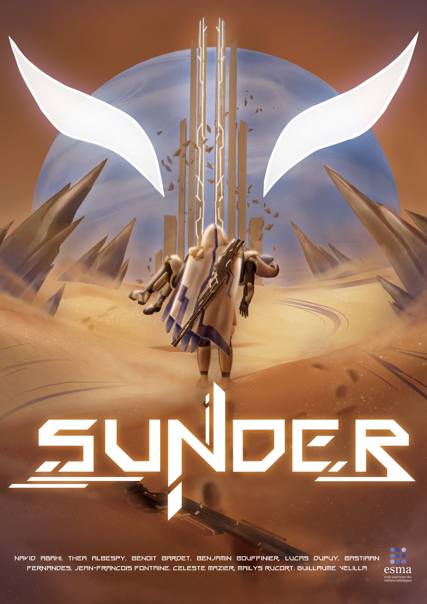
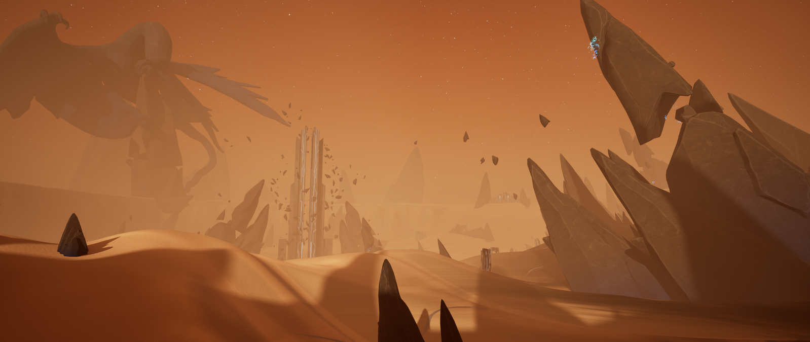